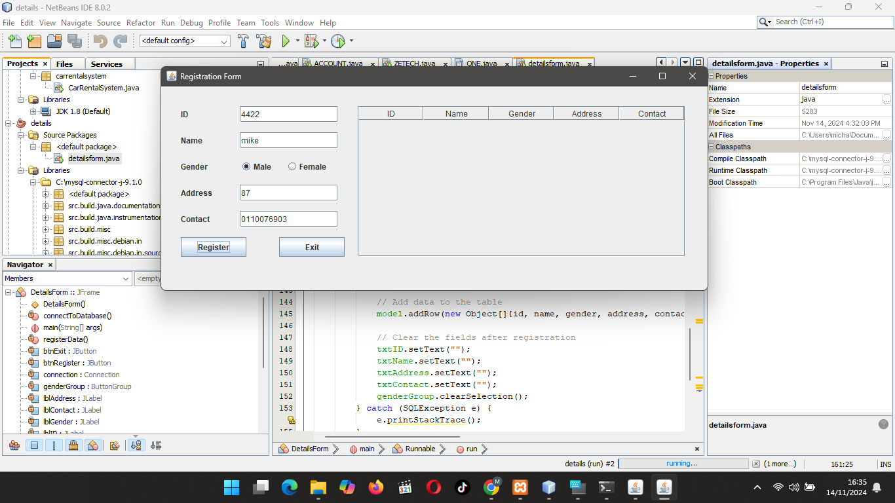
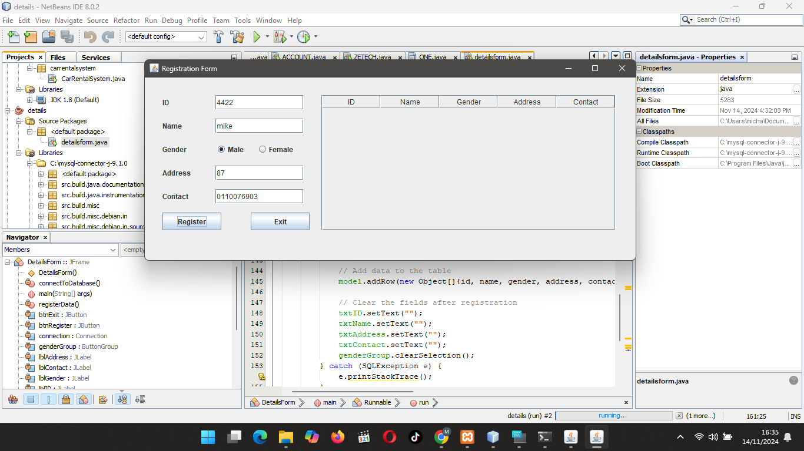
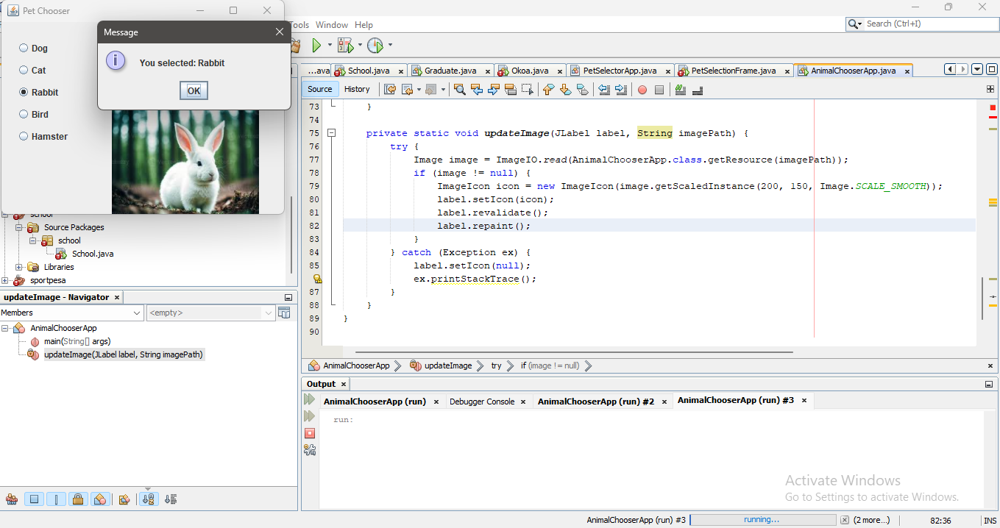
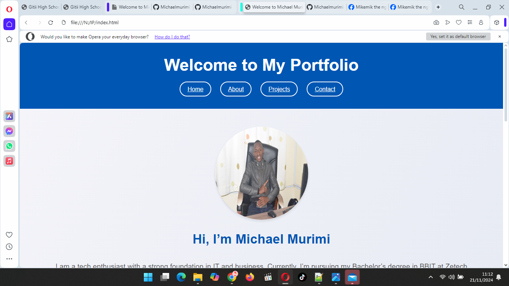

Registration Form Application
A user-friendly Java application for capturing and storing registration details with validation and file-based storage. Features: Form validation, auto-generation of unique IDs, and storage in a structured format.
A user-friendly Java application for capturing and storing registration details with validation and file-based storage. Features: Form validation, auto-generation of unique IDs, and storage in a structured format.
A Java-based interactive application that allows users to select their favorite animals via radio buttons and display corresponding images. Skills Used: Swing GUI, event handling, and image rendering.
A responsive website built to showcase my skills, projects, and professional journey. This project demonstrates my ability to use HTML, CSS, and JavaScript for dynamic interfaces. Key Features: Forms, tables, and creative design with seamless navigation.
| Project Name | Technology Used | Description |
|---|---|---|
| School Management System | Java, MySQL | An application to manage student and staff records efficiently. |
| Cybersecurity Awareness Campaign | Canva, Social Media | Designed and managed educational campaigns on cybersecurity best practices. |